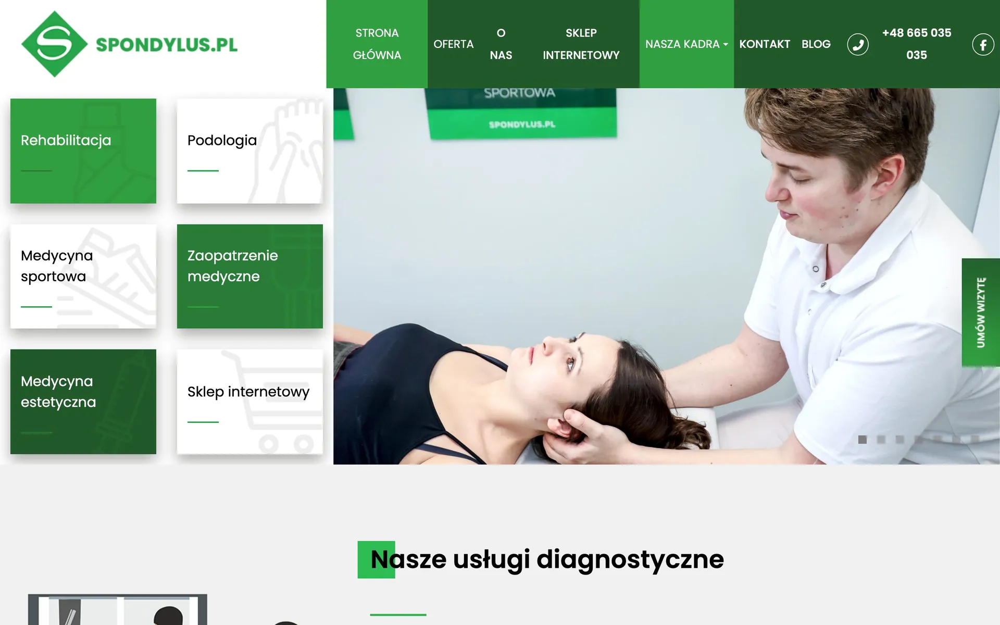
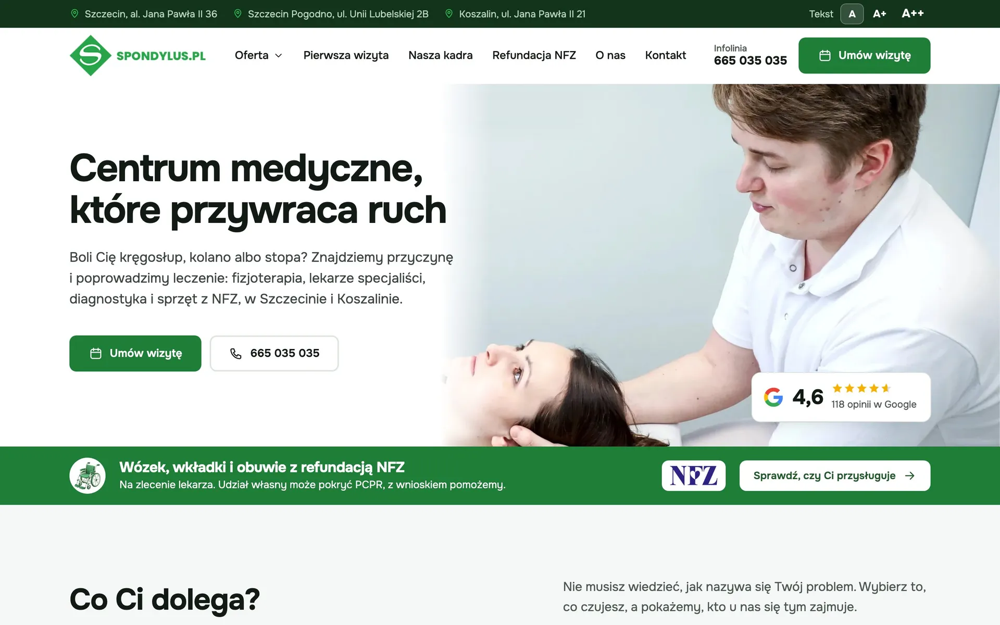
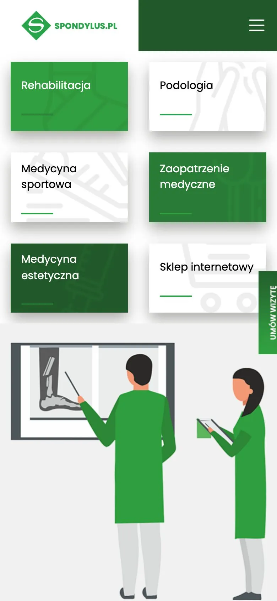
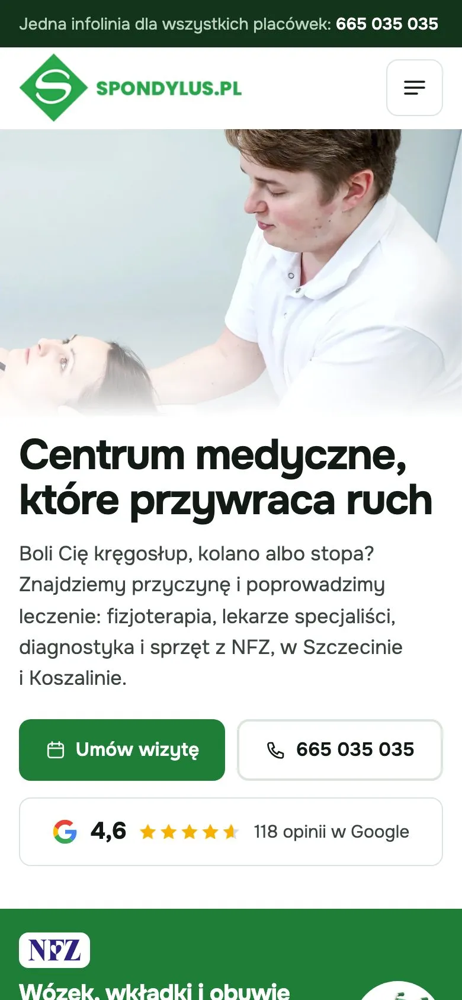
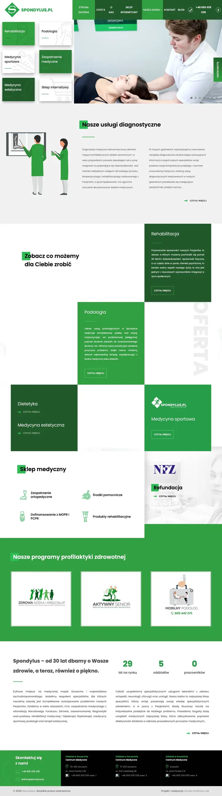
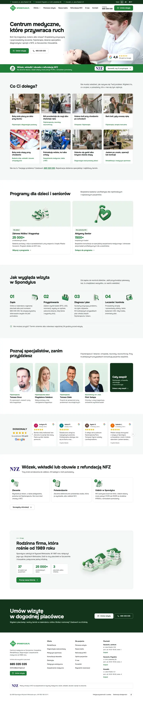

Obecna strona i propozycja nowej strony Spondylus
Przesuń suwak, żeby zobaczyć tę samą stronę główną przed zmianą i po niej. Zrzuty z 18.10.2026, obecna strona bez żadnych poprawek, bez okienka cookies.
Pierwszy ekran na komputerze
Szerokość 1440 px, tak jak na typowym laptopie


Pierwszy ekran na telefonie
Szerokość 390 px, tak jak na typowym smartfonie


Co się zmienia dla pacjenta
Najważniejsze różnice na stronie głównej
- W 3 sekundy wiadomo, gdzie jestem
Nagłówek, jedno zdanie o korzyści, przycisk zapisu, telefon i ocena z Google na pierwszym ekranie.
Obecnie: sześć kafli i slider bez nagłówka, zapis w pionowej zakładce przy krawędzi. - Zapis online do konkretnej placówki
Jeden przycisk „Umów wizytę” prowadzi do prawdziwego kalendarza każdej z trzech placówek.
Obecnie: zapis schowany, bez wyboru placówki na stronie głównej. - Objawy opisane słowami pacjenta
„Bolą mnie plecy po dniu przy biurku” zamiast nazw działów. Pacjent rozpoznaje siebie, zanim pozna nazwy usług.
Obecnie: lista usług, którą trzeba znać. - Refundacja NFZ krok po kroku
Pas pod pierwszym ekranem i trzy proste kroki od zlecenia do odbioru wózka, wkładek lub obuwia.
Obecnie: informacja ukryta w długim tekście o zaopatrzeniu. - Twarze i opinie
Specjaliści ze zdjęciami na stronie głównej i opinie pacjentów ze średnią 4,6 w Google.
Obecnie: brak twarzy i brak opinii na stronie głównej. - Dostępność dla starszych pacjentów
Powiększanie tekstu, wysoki kontrast, zatrzymanie animacji i większy kursor w jednym panelu.
Obecnie: brak ustawień dostępności.
Cała strona główna
Obie strony w tej samej skali

